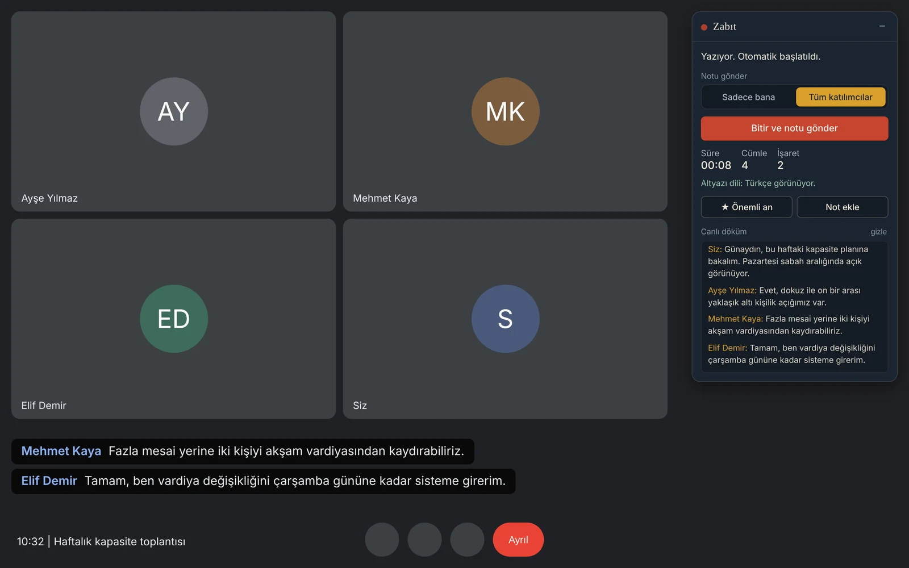
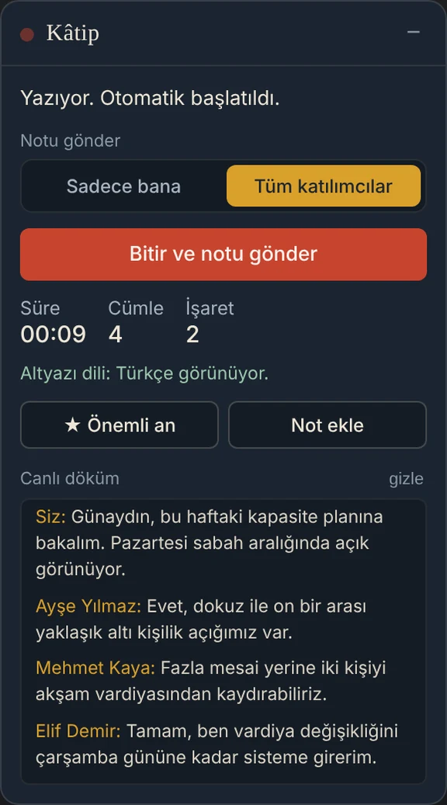
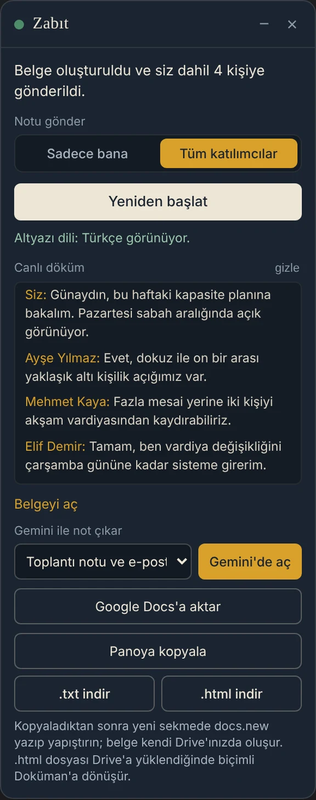
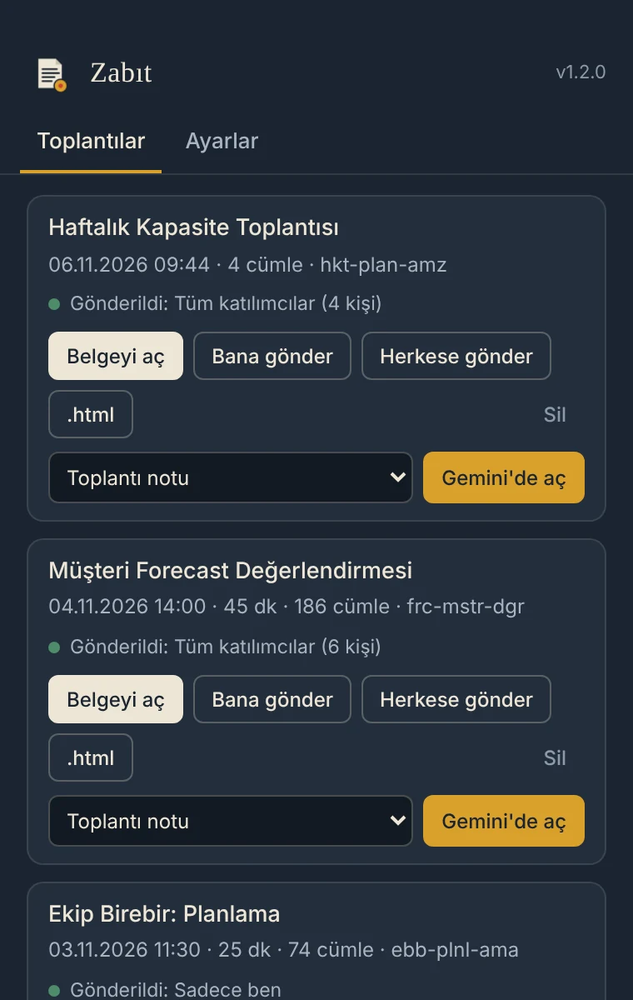
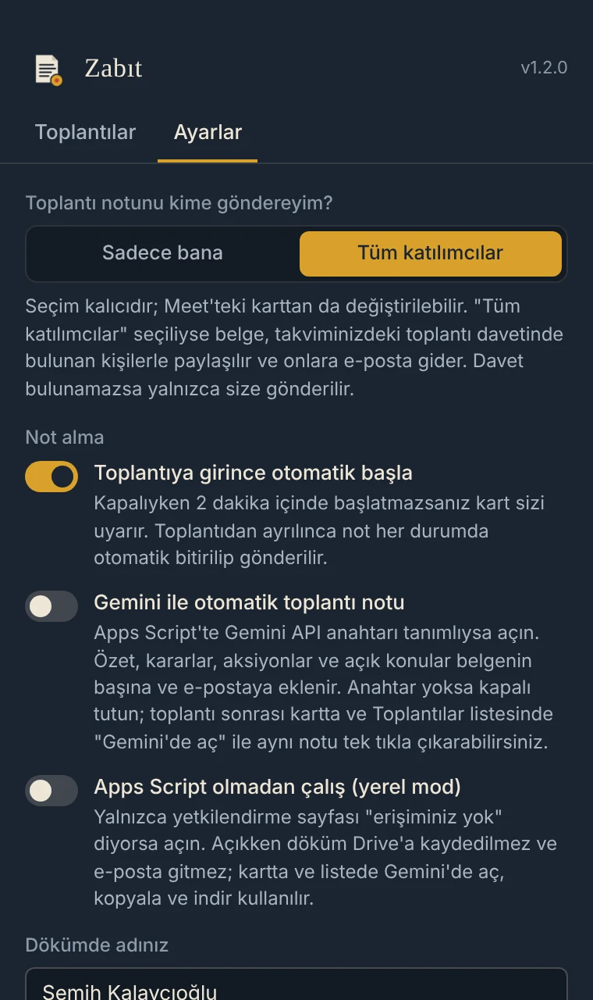

Türkçe toplantılarınızın kâtibi
Kâtip, Google Meet altyazısını konuşmacı ve saatle birlikte yazıya döker. Toplantıdan çıktığınız anda dökümü Drive'ınıza kaydeder, size ya da tüm katılımcılara gönderir ve tek tıkla Gemini'ye aktarır.
Toplantıya bot eklemez, ses kaydı almaz. Yalnızca yetkilendirilmiş kullanıcılar kurabilir.

Not tutmayı bırakın, toplantıya odaklanın
Meet'in kendi not alma özelliği Türkçe toplantıları desteklemiyor. Kâtip bu boşluk için yapıldı.
Canlı döküm
Altyazı, konuşmacı adı ve saatle birlikte kartta anlık görünür. Aynı kişinin ardışık cümleleri tek blokta toplanır.
Kendiliğinden biter
Görüşmeden ayrıldığınızda not otomatik bitirilir ve gönderilir. "Bitir"e basmayı unutmak sorun değil.
Önemli an ve not
Tek tıkla bir anı işaretleyin ya da kendi notunuzu yazın; dökümde zamanıyla yerini alır.
Size ya da herkese
Sadece bana ya da tüm katılımcılar. Tüm katılımcılar seçiliyse belge, takvim davetindeki kişilerle paylaşılır.
Tek tıkla Gemini
Toplantı notu, aksiyon listesi, karar kaydı gibi altı hazır komuttan birini seçin; Gemini kendi hesabınızda, metin yazılmış olarak açılır.
Otomatik başlatma
İsterseniz toplantıya girdiğiniz anda başlar. Kapalıysa 2 dakika sonra kart hatırlatır.
Her şey tek kartta
Kart Meet'in sağ üstünde durur; sürükleyebilir, küçültebilirsiniz. Konumu ve tercihleriniz hatırlanır.
- Süre, cümle ve işaret sayısı
- Altyazı dili göstergesi: Türkçe değilse uyarır
- Notu kime göndereceğinizi toplantı sırasında da değiştirebilirsiniz

Belge Drive'da, bağlantı gelen kutusunda
Döküm, Drive'ınızdaki "Kâtip Toplantı Dökümleri" klasörüne Google Doküman olarak kaydedilir.
- Belgenin başında Gemini için altı hazır komut
- Önemli anlar ve notlarınız dökümde vurgulu
- Panoya kopyalama, .txt ve .html indirme

Son 20 toplantınız tek yerde
Kâtip simgesine tıklayınca toplantılarınız, gönderim durumu ve belge bağlantısıyla listelenir.
- Bir toplantıyı sonradan kendinize ya da herkese yeniden gönderin
- Seçtiğiniz komutla doğrudan Gemini'de açın
- Sağ tık menüsünden Drive klasörüne ve yetkilendirme sayfasına ulaşın

Bir kez ayarlayın
- Varsayılan alıcı: Sadece bana ya da Tüm katılımcılar
- Toplantıya girince otomatik başlat
- Dökümde "Siz" yerine adınız

Kurulum iki dakika
Kâtip davetle erişilen özel bir Chrome Web Store öğesidir. Bağlantıyı ekip yöneticinizden alın.
Eklentiyi kurun
Size iletilen mağaza bağlantısını kurum hesabınızla açıp Chrome'a ekleyin.
Bir kez yetki verin
Kâtip simgesine sağ tıklayın, "Yetkilendirme sayfasını aç" deyin ve izinleri onaylayın.
Toplantıya girin
Meet'te altyazıyı Türkçe açın, kartta "Not almaya başla"ya basın ya da otomatik başlatmayı açın.
Ayrılın
Not kendiliğinden biter; belge Drive'ınızda, bağlantı e-postanızda.
Sık sorulanlar
Neden Meet'in kendi Gemini notlarını kullanmıyoruz?
Meet'in otomatik not alma özelliği Türkçe toplantıları desteklemiyor. Kâtip, Türkçe altyazıdan döküm çıkarıp notu Gemini'ye hazır komutla taşıyarak bu boşluğu kapatır. Türkçe olmayan toplantılarda Meet'in kendi notları kullanılabilir.
Toplantıdaki diğer kişiler Kâtip'i görür mü?
Hayır. Kâtip toplantıya katılımcı eklemez; yalnızca sizin tarayıcınızda çalışır. Yine de not aldığınızı katılımcılara söylemeniz iyi bir uygulamadır.
Döküm ne kadar doğru?
Meet'in otomatik altyazısı kadar. Noktalama eksik olabilir, özel isim ve rakamlarda hata olabilir. Hazır komutlar Gemini'den emin olmadığı bilgileri [?] ile işaretlemesini ister.
"Tüm katılımcılar" kimleri kapsar?
Takviminizdeki toplantı davetinde bulunan ve daveti reddetmemiş kişileri. Toplantı odaları dahil edilmez. Davet bulunamazsa döküm yalnızca size gönderilir.
Altyazıyı açmayı unutursam?
Kâtip başladığında altyazıyı açmayı dener ve kartta "Altyazı bekleniyor" uyarısı gösterir. Altyazı dili Türkçe değilse kart bunu da söyler.
Eklentiyi kimler kurabilir?
Kâtip Chrome Web Store'da özel olarak yayınlanır; yalnızca yetkili kullanıcı grubundaki hesaplar kurabilir. Döküm servisi de yalnızca kurum hesaplarına açıktır.